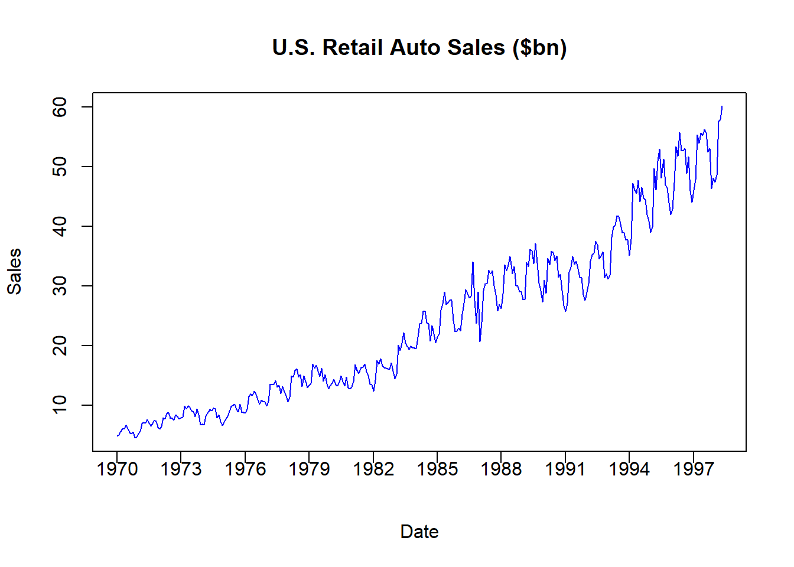
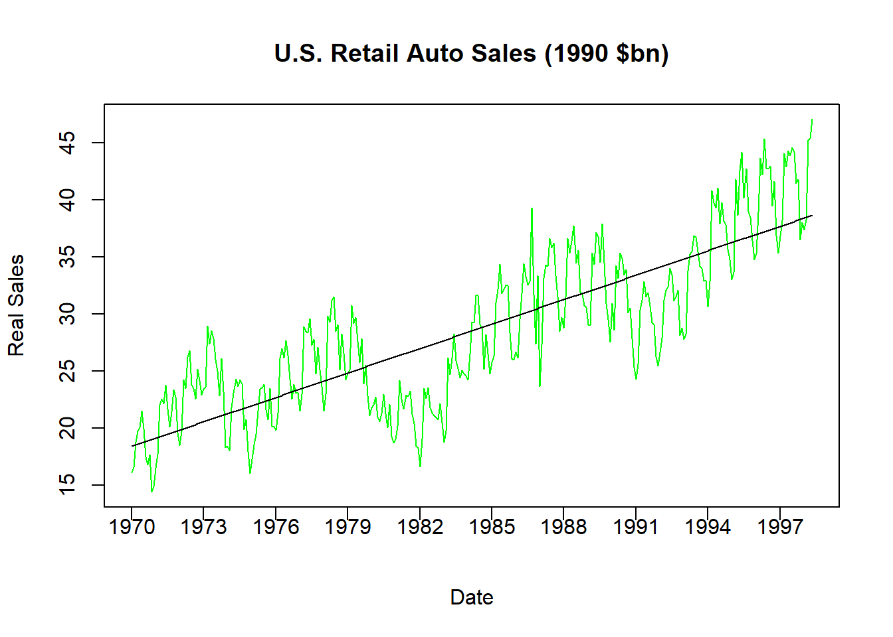

Chapter 8 Multiple Linear Regression
Sometimes one independent variable just doesn’t cut it.
\[PRF:\;Y_i=\beta_0+\beta_1X_{1i}+\beta_2X_{2i}+...+\beta_kX_{ki}+\varepsilon_i\]
\[SRF:\;Y_i=\hat{\beta}_0+\hat{\beta}_1X_{1i}+\hat{\beta}_2X_{2i}+...+\hat{\beta}_kX_{ki}+e_i\]
A Multiple Regression Model is a direct extension of the Simple Regression Model by adding additional independent variables. Adding additional independent variables allows the regression to use more information when trying to explain movements in the single dependent variable. In other words, multiple independent variables can explain changes in the dependent variable along different dimensions.
The multiple regression model has a lot in common with the simple regression model.
It is still solved via OLS. The first-order conditions are a bit more complicated than those stemming from a simple regression, but they are conceptually the same.
It still contains an intercept term and a residual term.
This is still a line equation - only it is a multi-dimensional line equation (i.e., a plane in the case of two dimensions).
The only significant change we need to make is with respect to interpretation of the slope coefficients. These slope coefficients still deliver the expected or average change in the dependent variable given a unit change in an independent variable. However, since we are looking at multiple independent variables simultaneously, we need to be explicit that we are examining the relationships one independent variable at a time. In other words, when we examine the relationship between the dependent variable and a particular independent variable, we need to explicitly state that we are holding all other independent variables constant.
\[\beta_k=\frac{\Delta Y_i}{\Delta X_{ki}}\]
In the population: a PRF slope coefficient indicates the EXPECTED or AVERAGE change in the dependent variable associated with a one-unit increase in the explanatory variable holding the other explanatory variables constant.
\[\hat{\beta}_k=\frac{\Delta Y_i}{\Delta X_{ki}}\]
In the sample: a SRF slope coefficient indicates the expected or average change in the dependent variable associated with a one-unit increase in the explanatory variable holding the other explanatory variables constant.
8.1 Application: Explaining house price in a multiple regression
Let us revisit the relationship between house price and house size, but extend the regression model to include the number of bedrooms as a second independent variable.
Our PRF becomes:
\[Price_i=\beta_0+\beta_1Size_i+\beta_2Rooms_i+\varepsilon_i\]
Our SRF becomes:
\[Price_i=\hat{\beta}_0+\hat{\beta}_1Size_i+\hat{\beta}_2Rooms_i+e_i\]
To visualize what we are about to do, lets start with scatter plots looking at the relationships between the dependent variable and each independent variable.
The figure on the left is the scatter plot between the House Price and House Size. This positive relationship is exactly what we have looked at previously. The figure on the right is the scatter plot between the same House Price but the number of bedrooms each house has. This figure illustrates that the houses in our sample have between 2 and 7 bedrooms (with no half-rooms), and homes with more bedrooms generally have higher prices (as expected). Note that we are looking at the same dependent variable along different dimensions. We can combine these dimensions into a singe (3-Dimensional) figure to see how the relationships between the dependent variable and each independent variable appear simultaneously.
data(hprice1,package='wooldridge')
Y <- hprice1$price
X1 <- hprice1$sqrft
X2 <- hprice1$bdrms
par(mfrow = c(1,2))
plot(X1,Y, col = "blue",
pch = 19, cex = 1,
xlab = "House Size", ylab = "House Price")
plot(X2,Y, col = "red",
pch = 19, cex = 1,
xlab = "Bedrooms", ylab = "House Price")scatter3D(X1, X2, Y, pch = 19, cex = 1, phi = 0,
colkey=FALSE, ticktype = "detailed",
xlab = "House Size", ylab = "Bedrooms",
zlab = "House Price", main = "3D Scatterplot")For comparison, suppose that we consider these independent variables one at a time in a simple regression. In particular, we can examine one simple regression model where House Size is the only independent variable, and another simple regression model where Bedrooms is the only independent variable.
REG1 <- lm(hprice1$price ~ hprice1$sqrft)
coef(REG1)## (Intercept) hprice1$sqrft
## 11.204145 0.140211REG2 <- lm(hprice1$price ~ hprice1$bdrms)
coef(REG2)## (Intercept) hprice1$bdrms
## 72.23111 62.02456The regression that only considers house size has a slope coefficient of 0.14. Remember that since house price was denoted in thousands of dollars and house size was denoted in square feet, this slope coefficient states that an additional square foot of house size will increase the average house price by $140.
The regression that only considers number of bedrooms has a slope coefficient of 62. This slope coefficient states that an additional bedroom will increase the average house price by $62,000.
While the results from these two simple regressions make sense, we need to realize that a simple regression model only considers a single independent variable to be important (and throws all of the other information into the garbage can). This means that the first regression takes no notice of the number of rooms a house has, while the second regression takes no notice of the size of the home. Since it is reasonable to assume that bigger homes have more bedrooms, then a regression model that is only given one of these pieces of information might be overstating the quantitative impact of the single independent variable.
To illustrate this, let us run a multiple regression model where both house size and number of bedrooms are considered.
REG3 <- lm(hprice1$price ~
hprice1$sqrft + hprice1$bdrms)
coef(REG3)## (Intercept) hprice1$sqrft hprice1$bdrms
## -19.3149958 0.1284362 15.1981910The slope with respect to house size is now 0.128 (down from 0.14) while the slope with respect to number of bedrooms is now 15.2 (down from 62). In order to make sense of these changes, let us explicitly interpret these slope coefficients within the context of a multiple regression model (where we can hold all other independent variables constant).
Holding number of bedrooms constant, an additional square foot of house size will increase a house price by $128, on average.
Holding house size constant, an additional bedroom will increase a house price by $15,200, on average.
The power of a multiple regression comes through when you look at the second slope interpretation. Multiple regression allows us to consider two houses that have the same house size but one house has an additional bedroom. In other words, imagine building a wall that turns one bedroom into two smaller bedrooms. This will increase the expected house price by $15,200, but this is much smaller than the simple regression relationship of $62,000. This is because the simple regression could not differentiate the impact of a bedroom from the impact of an increase in house size. The multiple regression model can.
The final figure shows the 3-dimensional regression line that best fits the sample. You can see that considering multiple dimensions increases the performance of the deterministic component of the model and therefore reduces the amount of information that goes into the garbage can as unpredictable. This can be shown in the last picture that only looks at the relationship from the “Size” dimension. In the figure on the left, the blue dots are the observations in the data, the black line is the regression line from the simple regression model (without Bedrooms), while the red dots are the model predictions from the multiple regression model with Bedrooms included as an additional independent variable. Notice how this allows the regression predictions to veer off of a straight line. This results in slightly less prediction errors showing up in your garbage can - as illustrated in the figure on the right.

par(mfrow = c(1,2))
plot(hprice1$sqrft,hprice1$price, col = "blue",
pch = 19, cex = 1,
xlab = "House Size", ylab = "House Price")
lines(hprice1$sqrft,fitted(REG1))
points(hprice1$sqrft,fitted(REG3),col = "red")
plot(hprice1$sqrft,residuals(REG1), col = "black",
pch = 19, cex = 1,
xlab = "House Size", ylab = "Residuals")
points(hprice1$sqrft,residuals(REG3),col = "red")
abline(h = 0,col="blue")
8.1.1 The Importance of “Controls”
One very important item to point out in the last application is exactly why the coefficient on number of bedrooms dropped from $62,000 to $15,200 when the size of the house was added to the regression. The reason can be broken up into two categories.
1. The independent variables are correlated
It seems reasonable to believe that bigger houses have more bedrooms. This means that the size of a house and the number of bedrooms are correlated with each other.
2. “All Else Equal” in a Multiple Regression is more than just words
A multiple regression can separately identify the impact of each independent variable on the dependent variable.
Put together, these two items suggest that when two independent variables are correlated, then they should both appear in the regression model. If not, then the correlation between an included independent variable and an omitted independent variable might lead to omitted variable bias. This is what we saw above in the regression with only number of bedrooms as an independent variable. The coefficient of $62,000 is giving you the combined impact of an additional room and a bigger house. When you add house size as another independent variable, you are now able to determine the expected increase in house price for an additional bedroom holding house size constant.
Bottom line is that even though you are concerned with the results from a particular independent variable, it is important to try and include all independent variables that might be correlated with the independent variable of interest. This attempts to alleviate omitted variable bias.
8.2 Adjusted \(R^2\)
Regardless of the number of independent variables, the variance of a regression model can be decomposed and a \(R^2\) can be calculated.
\[TSS = \sum^{N}_{i=1}(Y_i - \bar{Y})^2\]
\[ESS = \sum^{N}_{i=1}(\hat{Y}_i - \bar{Y})^2\]
\[RSS = \sum^{N}_{i=1}(Y_i - \hat{Y}_i)^2 = \sum^{N}_{i=1}e_i^2\]
\[R^2 = \frac{ESS}{TSS} = 1 - \frac{RSS}{TSS}\]
The \(R^2\) still delivers the proportion of the variation in the dependent variable explained by the model, only now the model is comprised of multiple independent variables.
An \(R^2\) is a very intuitive calculation, but it sometimes might be misleading.
8.2.1 Abusing an \(R^2\)
No matter how hard I try to downplay the importance of an \(R^2\), students always have the tendency to shoot for that measure to be as close to 1 as possible. The problem with this goal is that an \(R^2\) equal to 1 in not necessarily a good thing.
Consider a previous regression where we explained house prices with only the number of bedrooms.
REG1 <- lm(price ~ bdrms, data = hprice1)
summary(REG1)$r.squared## [1] 0.2581489The coefficient of determination states that the number of bedrooms explains slightly over 25 percent of the variation in house prices. If we include the size of the house in the regression,
REG2 <- lm(price ~ bdrms + sqrft, data = hprice1)
summary(REG2)$r.squared## [1] 0.6319184we see that the \(R^2\) increases to 0.63 as before. If we include yet another variable such as the size of the property,
REG3 <- lm(price ~ bdrms + sqrft + lotsize, data = hprice1)
summary(REG3)$r.squared## [1] 0.6723622we see that the regression now explains over 67 percent of the variation in house prices.
What we are seeing is that the more variables you add the higher the \(R^2\) is getting. While this might lead you to believe that we are adding important independent variables to the regression, the problem is that the \(R^2\) will go up no matter what variable you add. The increase might be slight, but the \(R^2\) will never go down.
Xcrap <- rnorm(88)REG4 <- lm(price ~ bdrms + sqrft + lotsize + Xcrap, data = hprice1)
summary(REG3)$r.squared## [1] 0.6723622summary(REG4)$r.squared## [1] 0.6731707The exercise above adds a completely random variable as a fourth independent variable. It should have nothing to do with explaining house prices. However, if you generate the correct random variables, then you might get an increase in the \(R^2\) by as much as an entire percentage point. Does this say that the random variable actually helps explain variations in house prices? Of course not. What it does show is that sometimes we can abuse the \(R^2\), so we need an additional measure of goodness of fit.
8.2.2 An Adjusted \(R^2\)
The problem with an \(R^2\) is that is will increase no matter what independent variable you throw into the regression. If you think about it, if a regression with two independent variables explains 63 percent of the variation in the dependent variable, then adding a third variable (no matter how silly) will deliver a regression that will explain no less than 63 percent of the variation. We therefore cannot use the \(R^2\) as a measure for whether or not we should include an independent variable because we don’t know how big an increase in \(R^2\) needs to be. We therefore need a goodness of fit measure that not only has the potential to increase when the added variable is deemed important, but has the potential to decrease when the variable is unimportant. This is called an adjusted \(R^2\).
\[\bar{R}^2 = 1 - \frac{RSS/(N-k-1)}{TSS/(N-1)}\]
The main difference between the adjusted \(R^2\) and it’s unadjusted measure are the degrees of freedom in the numerator. When you add an additional independent variable, \(k\) goes up by one but \(N\) stays constant. Also, when adding an additional independent variable, the RSS goes down (which is what delivers an increase in the standard \(R^2\)). What you have in the numerator is a cost / benefit analysis. In other words, if the decrease in RSS is greater - then the \(\bar{R}^2\) increases and the independent variable of question might be somewhat important. However, if the decrease in \(N-k-1\) is greater, then the \(\bar{R}^2\) decreases and the independent variable of question is not important.
8.2.2.1 Conclusion: for informal use only!
While the \(R^2\) and adjusted \(R^2\) are two common measures of goodness of fit, they are informal at best. One can interpret them along the lines of how we did above, but there will more formal measures of whether or not an independent variable improves the forecasts of the regression model. Bottom line: these measures can give some insight to the results of a regression model, but they aren’t anything worth hanging you final conclusions on.
8.3 Qualitative (Dummy) Variables
Quantitative variables are easy to model and interpret because they take on numerical values and are readily dealt with by computers. Qualitative variables, however, are variables that do not naturally deliver numerical values. Examples of qualitative variables are:
Gender (male, female)
Marital status (yes, no)
Ethnicity (white, Hispanic, Asian, etc.)
Qualitative variables are made operational for regression analysis by creating dummy variables. A dummy variable can only take on two values (i.e., 0 or 1) and should be thought of as a switch.
1 implies the switch is on, meaning that the designated trait is present for an individual observation.
0 implies the switch is off, meaning that the trait is absent for an individual observation.
We can consider two different types of dummy variables depending on if we model the presence or absence of a trait to impact the intercept of the model or the relationship (or slope) between the dependent variable and other independent variables. We will cover these in turn.
8.3.1 Intercept dummy variable
An intercept dummy variable is a qualitative variable that stands alone in a regression just like other quantitative variables we have encountered. Let us illustrate this by adding an intercept dummy variable to a wage analysis.
Suppose you are a consultant hired by a firm to help determine the underlying features of the current wage structure for their employees. You want to understand why some wage rates are different from others. Let our dependent variable be wage (the hourly wage of an individual employee) and the independent variables be given by…
educ be the total years of education of an individual employee
exper be the total years of experience an individual employee had prior to starting with the company
tenure is the number of years an employee has been working with the firm.
These independent variables are all quantitative because they directly translate to numbers, and the model considered previously allowed us to analyze if these independent variables helped us explain why some people earn a higher wage than others.
We can also add a qualitative variable to this list of independent variables to see if gender can help explain why some people earn a higher wage than others. In particular, consider the qualitative variable female which equals 1 if the individual is female and 0 if the individual is not (i.e., male).
The Specified model (the PRF) now becomes
\[wage_i=\beta_0+\beta_1educ_i+\beta_2exper_i+\beta_3tenure_i+\beta_4female_i+\varepsilon_i\]
Note that the slope of the three quantitative variables considered earlier are completely unchanged. The slope with respect to the dummy variable is similar, but needs to be interpreted in a specific manner. In particular, since we normally interpret slopes with respect to a unit increase in the independent variable, and the fact that a dummy variable can only go up one unit (i.e., from a 0 to a 1), we therefore interpret a dummy variable accordingly.
\[\beta_4 = \frac{\Delta wage}{\Delta female}\]
Holding education, tenure, and experience constant, a female earns a \(\beta_4\) difference in wage relative to a male, on average
Note that the dummy variable is constructed such that males receive a 0 while females receive a 1. This implies that \(\beta_4\) will denote the average change in a female’s wage relative to a male’s wage. If \(\beta_4 < 0\), then this would imply that a female’s average wage is less than a male’s.
The four independent variables are illustrated in the scatter plots below. Notice that even though the dummy variable takes on only two numbers by design, we can still see how it effectively splits the observations into the two groups.

There is no difference between estimating quantitative and qualitative variables as far as R in concerned.
REG <- lm(wage~educ+exper+tenure,data=wage1)
coef(REG)## (Intercept) educ exper tenure
## -2.87273482 0.59896507 0.02233952 0.16926865REG <- lm(wage~educ+exper+tenure+female,data=wage1)
coef(REG)## (Intercept) educ exper tenure female
## -1.56793870 0.57150477 0.02539587 0.14100506 -1.81085218Interpretations of the other independent variables are unchanged. However, \(\hat{\beta}_4 = -1.81\) suggests the following:
Holding education, tenure, and experience constant, a female earns $1.81 less in wages relative to a male, on average
This states that we can compare two individuals with the same education, experience, and tenure levels but differ in gender and conclude that the male earns more.
Let us examine this further to show exactly why this type of qualitative variable is called an intercept dummy variable. Since the dummy variable can only take on the values 1 or 0, we can write down the PRF for both cases. In particular, the PRF for a male has female = 0 while the PRF for a female has female = 1.
\[Male: wage_i=\beta_0+\beta_1educ_i+\beta_2exper_i+\beta_3tenure_i+\varepsilon_i\] \[Female: wage_i=(\beta_0+\beta_4)+\beta_1educ_i+\beta_2exper_i+\beta_3tenure_i+\varepsilon_i\]
Notice that \(\beta_4\) does not appear in the PRF for males because the female variable equals 0, while it appears alone in the PRF for females because the female variable equals 1. After rearranging a bit, you can now see that the intercept term of the PRF for males is \(\beta_0\) while the intercept term of the PRF for females is \((\beta_0+\beta_4)\). This illustrates that if you hold the other three independent variables constant, the difference between the wage rates of a male and female is \(\beta_4\) on average. In other words, if you plug in the same numbers for education, experience, and tenure in the two PRFs above, then the difference in wages between men and women who share these traits will be \(\beta_4\).
8.3.2 Slope dummy variable
While an intercept dummy variable is a very powerful modeling tool, it makes one glaring assumption. Consider the regression results above, namely the estimated slope coefficient with respect to tenure
\[\hat{\beta}_3 = 0.14\]
The interpretation of this slope coefficient is as follows:
Holding education, experience, and gender constant, an individual will receive $0.14 more in wages for every additional year of tenure, on average.
In particular, this states that a female receives the same annual raise than a male. This is an assumption of the model, because the model is incapable of differentiating the annual wage with respect to gender. We can extend the model to explicitly test this assumption with the use of a slope dummy variable.
A slope dummy variable is an example of an interaction term. In other words, it is a new variable that arises from taking the product of two variables. In this case, in order for us to examine the gender difference of tenure, we consider the product between female and tenure.
\[\begin{aligned} wage_i = \;&\beta_0+\beta_1educ_i+\beta_2exper_i+ \beta_3tenure_i+\beta_4female_i+... \\ &\beta_5(tenure_i*female_i)+\varepsilon_i \end{aligned}\]
Like with our illustration of an intercept dummy, we can see what this PRF looks like for males and females.
\[Male: wage_i=\beta_0+\beta_1educ_i+\beta_2exper_i+\beta_3tenure_i+\varepsilon_i\] \[Female: wage_i=(\beta_0+\beta_4)+\beta_1educ_i+\beta_2exper_i+(\beta_3+\beta_5)tenure_i+\varepsilon_i\]
For males, the PRF looks exactly as it does when we only considered an intercept dummy because both \(\beta_4\) and \(\beta_5\) drop out when \(female_i = 0\). For females, we can see the potential change in the intercept (as before), but we can now see a potential change in the slope with respect to tenure.
REG <- lm(wage~educ+exper+tenure+
female+female*tenure,data=wage1)
coef(REG)## (Intercept) educ exper tenure female tenure:female
## -2.00229568 0.58279061 0.02834532 0.17780235 -1.17787884 -0.14359567Our extended model now gives a better picture of the gender impact on wages. \[\hat{\beta}_4 = -1.18\]
Holding all else constant, a female earns $1.18 less than a male on average.
When considering the impact of tenure on wages, we could show the difference explicitly:
\[Males: \frac{\Delta wage}{\Delta tenure} = \hat{\beta}_3=0.18\] \[Females: \frac{\Delta wage}{\Delta tenure} = \hat{\beta}_3+\hat{\beta}_5=0.18-0.14=0.04\]
The regression states that males receive an $0.18 increase in wages on average for every additional year in tenure (holding all else constant), while females receive only a $0.04 increase in wages on average.
Note that we could also consider slope dummy variables with respect to education as well as experience. You should do those on your own.
8.3.3 What if there are more than two categories?
Since a dummy variable can take on either a zero or a one, it is perfectly designed to identify two categories. This might be fine for some variables like yes / no or win / lose, but what if a variable has more than two categories? Examples would be direct extensions of the above variables: yes / no / maybe or win / lose / draw.
The rule of thumb (to be explained in detail soon) is:
A variable containing \(N\) categories requires \(N-1\) dummy variables.
This rule actually applies to our standard case, because we can model \(N=2\) categories with \(N-1=1\) dummy variables. In our example above, we wanted to identify 2 categories of gender (male or female) so we needed 1 dummy variable. However, we need to take a little more care and follow additional steps when dealing with more than one category. Suppose we extended our gender characteristics to identify a third gender category (other) in order to account for individuals who do not subscribe to one of the two traditional categories. We will use this scenario to illustrate how our model gets extended.
- Identify a benchmark category
A benchmark category is one of the characteristics that the researcher identifies as the category that all other categories get compared against. In our gender example, suppose we choose male as our benchmark characteristic. You will find that this choice is arbitrary, but it may have implications.
- Construct appropriate dummy variables
Once the benchmark category has been established as male, we need two dummy variables: one that identifies individuals as female and one that identifies individuals as other.
\[female_i = 1 \mbox{ if female; } 0 \mbox{ if male or other }\]
\[other_i = 1 \mbox{ if other; } 0 \mbox{ if male or female }\]
Note that each dummy variable is still a switch that signals the presence or absence of a characteristic. However, when BOTH dummy variables are zero at the same time… you have your benchmark category. That is how you can identify three categories with only two dummy variables.
To illustrate, consider the original model restricting attention to intercept dummies.
\[wage_i=\beta_0+\beta_1educ_i+\beta_2exper_i+\beta_3tenure_i+\beta_4female_i +\beta_5other_i +\varepsilon_i\]
We can write down what the model looks like for each of our three categories:
\[Male: wage_i=\beta_0+\beta_1educ_i+\beta_2exper_i+\beta_3tenure_i+\varepsilon_i\]
\[Female: wage_i=(\beta_0+\beta_4)+\beta_1educ_i+\beta_2exper_i+\beta_3tenure_i+\varepsilon_i\]
\[Other: wage_i=(\beta_0+\beta_5)+\beta_1educ_i+\beta_2exper_i+\beta_3tenure_i+\varepsilon_i\]
When comparing these three equations, you can hopefully see how the benchmark category comes into play. The first equation is essentially the benchmark equation, indicating that \(\beta_0\) is the intercept term for males. The second equation is for females, and shows how the intercept for females differs from males (given by \(\beta_4\)). The third equation is for those identifying as other, and shows how the intercept for these individuals differs from males (given by \(\beta_5\)). Note that all of the other slopes are assumed to be identical here (but we could consider slope dummies like above).
One detail about the application above worthy of mention is that the coefficients \(\beta_4\) and \(\beta_5\) show how each category compares to the benchmark category. We can test if these coefficients are significantly different from zero with standard hypothesis tests. For example:
\[H_0: \; \beta_4 = 0 \quad H_1: \; \beta_4 \neq 0\]
However, if we show that \(\beta_4\) and \(\beta_5\) were significantly different than zero, we can only conclude that females and individuals in the other category are treated differently than males. We cannot determine if female and other are significantly different from each other without a joint hypothesis test (examined below) or a choice of a new benchmark category.
8.3.4 A Final Application
Let us consider an in-depth application where dummy variables are essential for making time-series variables ready for analysis.
Consider the following time series data:
library(readxl)
AUTO <- read_excel("data/AUTO_SA.xlsx")
plot(AUTO$INDEX,AUTO$AUTOSALE,
type = "l", main = "U.S. Retail Auto Sales ($bn)",
col = "blue", xlab = "Date", ylab = "Sales", xaxt = "n")
xtick <- seq(1,length(AUTO$INDEX), by = 36)
axis(side=1, at=xtick, labels = FALSE)
text(x=xtick, par("usr")[3],
labels = c("1970","1973","1976","1979","1982","1985",
"1988","1991","1994","1997"),
pos = 1, xpd = TRUE)
The figure illustrates retail automobile sales, denoted in billions of dollars, for the US between 1970 and 1998. As with most time series, this data is actually a combination of several components.
Trend: The long-term (i.e. average) increase or decrease in value over time.
Seasonality: The repeating (i.e. predictable) short-term cycle in the series caused by the seasons or months of the year
Random: The information in the series that is not due to a long-term trend or a short-term cyclical pattern is what we would actually like to explain.
Lets us decompose this series in several steps to not only give us more exposure to dummy variables, but to also learn a bit more about time series data.
8.3.4.1 Make a Nominal Series a Real Series
The auto sales series above is known as a nominal series because the dollar values for each time period are expressed in the prices of that time period. For example, the data indicates that the US had $4.79 billion in auto sales in January 1970 and $47.4 billion in January 1998. We cannot say that auto sales increased by ten times during this time period, because the US also experience inflation during this time period. In particular, $4.79 billion is denoted in 1970 dollars while $47.4 billion is denoted in 1998 dollars. In order to remove any inflationary distortions from the data, we need to divide these numbers by some measure of how average prices have evolved. There are many ways of doing this, but a direct method is to use the consumer price index or CPI. The CPI tells us how average prices have evolved relative to a benchmark year that is set to 100 (or 1). If the CPI differs in a particular year, then we know how prices have changes relative to the benchmark year.
plot(AUTO$INDEX,AUTO$CPI,
type = "l", main = "Consumer Price Index (1990 = 100)",
col = "blue", xlab = "Date", ylab = "Index", xaxt = "n")
xtick <- seq(1,length(AUTO$INDEX), by = 36)
axis(side=1, at=xtick, labels = FALSE)
text(x=xtick, par("usr")[3],
labels = c("1970","1973","1976","1979","1982","1985",
"1988","1991","1994","1997"),
pos = 1, xpd = TRUE)
The figure above illustrates the CPI where 1990 is denoted as the benchmark year (because it is set to 1). All other time periods now have prices calculated relative to the benchmark. For example, the CPI in January 1970 is \(0.30\) which means that average prices were 70 percent lower than what they were in 1990.
We use the CPI to transform a nominal series into a real series. For example:
\[\mbox{Real Auto Sales} = \frac{\mbox{Nominal Auto Sales}}{\mbox{CPI}}\]
AUTO$RAUTO = AUTO$AUTOSALE / AUTO$CPI
plot(AUTO$INDEX,AUTO$RAUTO,
type = "l", main = "U.S. Retail Auto Sales (1990 $bn)",
col = "red", xlab = "Date", ylab = "Real Sales", xaxt = "n")
xtick <- seq(1,length(AUTO$INDEX), by = 36)
axis(side=1, at=xtick, labels = FALSE)
text(x=xtick, par("usr")[3],
labels = c("1970","1973","1976","1979","1982","1985",
"1988","1991","1994","1997"),
pos = 1, xpd = TRUE)
This figure now shows the Real US Auto Sales denoted in 1990 prices. For example, January 1970 experienced $16.15 billion in auto sales while January 1998 experienced $47.05. Now that these two numbers are both stated using the same price level, we can say that car sales increased by three times (not ten) over the time period.
8.3.4.2 Remove a Trend
Our real sales data still shows signs of both a trend and a seasonal cycle that need to be removed. Let us start by removing the trend.
Given that a trend is defined as the average change in a time series, we are technically attempting to identify (and remove) the average change in the series given a one-unit increase in time. Since this data is monthly, we are attempting to identify the average monthly change in the series. We can identify the trend with a regression equation.
AUTO$TREND <- seq(1,length(AUTO$INDEX), by = 1)
DTRND <- lm(AUTO$RAUTO ~ AUTO$TREND)
coef(DTRND)## (Intercept) AUTO$TREND
## 18.37195789 0.05942082plot(AUTO$INDEX,AUTO$RAUTO,
type = "l", main = "U.S. Retail Auto Sales (1990 $bn)",
col = "green", xlab = "Date", ylab = "Real Sales", xaxt = "n")
xtick <- seq(1,length(AUTO$INDEX), by = 36)
axis(side=1, at=xtick, labels = FALSE)
text(x=xtick, par("usr")[3],
labels = c("1970","1973","1976","1979","1982","1985",
"1988","1991","1994","1997"),
pos = 1, xpd = TRUE)
lines(AUTO$INDEX,fitted(DTRND), col = "black")
The code above does three things. First, it creates a variable called TREND which is simply an increasing list of numbers from 1 (the first observation) to 341 (the last observation). Each increase is an additional month. Second, it runs a regression where real auto sales is the dependent variable while trend is the only independent variable.
\[Real\;Sales_t = \beta_0 + \beta_1 \; Trend_t + \varepsilon_t\]
The slope coefficient with respect to the trend is \(0.059\) which means that average auto sales increase by roughly \(0.06\) billion 1990 dollars each month on average. Finally, it plots the real series as well as our calculated trend together. Notice how the predicted sales coming from the trend line is straight - indicating how this is only the expected sales for a particular month given information only on the evolution of time.
Comparing these two lines in the figure should give you an idea how the trend gets removed from a time series. If we want to remove the predictable change in a series over time, then we can subtract these numbers from the original series once we estimate the trend. Note however that this is already done for you, because the residual of the above regression is actually the information in auto sales that cannot be explained by the predictable evolution of time.
AUTO$RAUTO_DT = residuals(DTRND)
plot(AUTO$INDEX,AUTO$RAUTO_DT,
type = "l",
main = "U.S. Retail Auto Sales (1990 $bn, Dentrended)",
col = "cyan", xlab = "Date",
ylab = "Real, Detrended Sales", xaxt = "n")
xtick <- seq(1,length(AUTO$INDEX), by = 36)
axis(side=1, at=xtick, labels = FALSE)
text(x=xtick, par("usr")[3],
labels = c("1970","1973","1976","1979","1982","1985",
"1988","1991","1994","1997"),
pos = 1, xpd = TRUE)
The above figure illustrates the detrended data, where negative numbers indicate that observations are below trend while positive numbers indicate that observations are above trend.
8.3.4.3 Remove Seasonality
The figure above still includes a seasonal component which needs to be removed. We will do this using dummy variables.
Identifying seasonality generally refers to the short-run average pattern observed in the series. Since this is monthly data, we would like to observe the average sales in each month. If this were quarterly series, we would like to observe the average sales in each season (summer, fall, winter, spring). We can identify these average amounts by using dummy variables to identify if each observation falls into a particular month.
The first step is to establish a benchmark month. This is essentially an arbitrary decision, so lets just go with December (i.e. the twelfth month of the year).
head(AUTO)## # A tibble: 6 x 9
## INDEX YEAR MONTH DATE AUTOSALE CPI RAUTO TREND RAUTO_DT
## <dbl> <dbl> <dbl> <dbl> <dbl> <dbl> <dbl> <dbl> <dbl>
## 1 1 1970 1 1970 4.79 0.297 16.2 1 -2.28
## 2 2 1970 2 1970. 4.96 0.298 16.6 2 -1.88
## 3 3 1970 3 1970. 5.64 0.300 18.8 3 0.256
## 4 4 1970 4 1970. 5.98 0.302 19.8 4 1.16
## 5 5 1970 5 1970. 6.08 0.303 20.1 5 1.38
## 6 6 1970 6 1970. 6.55 0.305 21.5 6 2.77Note that our dataset already has a variable called month which identifies 1 as January, 2 an February, etc. This will make the creation of dummy variables very easy.
Since we want to break this data into 12 categories, then we will need to construct 11 dummy variables. One dummy variable will deliver a 1 every time the observation is in January (0 elsewhere), one dummy variable will deliver a 1 every time the observation is in February (0 elsewhere), and so on. We can do this by hand (which is tedious), or we can use a new package called fastDummies.
If you are using fastDummies for the first time, you will want to install it:
install.packages("fastDummies")This package is designed to accept a variable and construct dummy variables for however many categories it can identify. For example:
library(fastDummies)
AUTO <- dummy_cols(AUTO, select_columns = 'MONTH')
names(AUTO)## [1] "INDEX" "YEAR" "MONTH" "DATE" "AUTOSALE" "CPI" "RAUTO" "TREND" "RAUTO_DT"
## [10] "MONTH_1" "MONTH_2" "MONTH_3" "MONTH_4" "MONTH_5" "MONTH_6" "MONTH_7" "MONTH_8" "MONTH_9"
## [19] "MONTH_10" "MONTH_11" "MONTH_12"Note how the dataset AUTO now contains 21 variables when it previously contained 9. This is because the above lines of code created 12 new variables - a dummy variable for each month of the year (1-12). Since we are considering the 12th month as our benchmark, we simply do not include it in our regression.
DS <- lm(RAUTO_DT ~ MONTH_1 + MONTH_2 + MONTH_3 + MONTH_4 +
MONTH_5 + MONTH_6 + MONTH_7 + MONTH_8 + MONTH_9 +
MONTH_10 + MONTH_11, data = AUTO)
summary(DS)##
## Call:
## lm(formula = RAUTO_DT ~ MONTH_1 + MONTH_2 + MONTH_3 + MONTH_4 +
## MONTH_5 + MONTH_6 + MONTH_7 + MONTH_8 + MONTH_9 + MONTH_10 +
## MONTH_11, data = AUTO)
##
## Residuals:
## Min 1Q Median 3Q Max
## -8.3877 -1.8444 0.4071 2.3868 9.4046
##
## Coefficients:
## Estimate Std. Error t value Pr(>|t|)
## (Intercept) -3.2222 0.6231 -5.172 4.04e-07 ***
## MONTH_1 -0.5227 0.8735 -0.598 0.550014
## MONTH_2 0.5072 0.8735 0.581 0.561902
## MONTH_3 5.2955 0.8735 6.062 3.68e-09 ***
## MONTH_4 4.9933 0.8735 5.716 2.44e-08 ***
## MONTH_5 6.1152 0.8735 7.001 1.44e-11 ***
## MONTH_6 6.1181 0.8811 6.943 2.05e-11 ***
## MONTH_7 4.8101 0.8811 5.459 9.45e-08 ***
## MONTH_8 4.6222 0.8811 5.246 2.79e-07 ***
## MONTH_9 2.8030 0.8811 3.181 0.001607 **
## MONTH_10 3.1100 0.8811 3.530 0.000476 ***
## MONTH_11 0.8048 0.8811 0.913 0.361724
## ---
## Signif. codes: 0 '***' 0.001 '**' 0.01 '*' 0.05 '.' 0.1 ' ' 1
##
## Residual standard error: 3.297 on 329 degrees of freedom
## Multiple R-squared: 0.3468, Adjusted R-squared: 0.325
## F-statistic: 15.88 on 11 and 329 DF, p-value: < 2.2e-16The dummy variable coefficients presented above show how the average auto sales for a particular month differ from the benchmark month of December. For example, June sales (MONTH_6) is the largest above trend on average with 6.12 billion, while January sales (MONTH_1) is actually lower than December average trend sales by 0.52 billion on average. However, note that the difference between June and December is significantly different from zero, while the difference between January and December is not.
plot(AUTO$INDEX,AUTO$RAUTO_DT,
type = "l",
main = "U.S. Retail Auto Sales (1990 $bn, Dentrended)",
col = "cyan", xlab = "Date",
ylab = "Real, Detrended Sales", xaxt = "n")
xtick <- seq(1,length(AUTO$INDEX), by = 36)
axis(side=1, at=xtick, labels = FALSE)
text(x=xtick, par("usr")[3],
labels = c("1970","1973","1976","1979","1982","1985",
"1988","1991","1994","1997"),
pos = 1, xpd = TRUE)
lines(AUTO$INDEX,fitted(DS),col = "gray")
The figure above compares the actual detrended series (composed of seasonal and random components) and the seasonal component estimated from our use of dummy variables. As with removing the trend, we can now remove the seasonal component by taking the difference between these two series or simply using the residuals of the regression (since this is the part of the series that cannot be explained by the repeating of months).
plot(AUTO$INDEX,residuals(DS),
type = "l",
main = "U.S. Retail Auto Sales (1990 $bn, Detrended and SA)", col = "purple",
xlab = "Date",
ylab = "Real, Detrended, and SA Sales", xaxt = "n")
xtick <- seq(1,length(AUTO$INDEX), by = 36)
axis(side=1, at=xtick, labels = FALSE)
text(x=xtick, par("usr")[3],
labels = c("1970","1973","1976","1979","1982","1985",
"1988","1991","1994","1997"),
pos = 1, xpd = TRUE)
This final figure illustrates the random component of US auto retail sales once we removed price distortions, a long-run trend, and a seasonal cycle. What remains is the component that cannot be explained by these predictable (and uninteresting) things - and this is exactly what analysts what to explain with other more interesting variables (e.g. interest rates, exchange rates, bond prices, etc.). Notice how you can make out the two recessions that occurred during the time frame quite easily.
8.4 Joint Hypothesis Tests
8.4.1 Simple Hypothesis Tests
With respect to statistical inference, confidence intervals and simple hypothesis tests are performed in multiple regression models exactly the same way as in simple regression models. The only difference is that a simple regression model calculated probabilities using \(n-2\) degrees of freedom, while a multiple regression calculates probabilities using \(n-k-1\) degrees of freedom, where \(k\) is the number of independent variables in the model. Note that the degrees of freedom are consistent across models - it’s just that a simple regression model has \(k=1\) by default.
8.4.2 Simple versus Joint Tests
We have already considered all there is to know about simple hypothesis tests.
\[H_0: \beta = 0 \quad \text{versus} \quad H_A: \beta \neq 0\]
With the established (one-sided or two-sided) hypotheses, we were able to calculate a p-value and conclude. There is nothing more to it than that.
A simple hypothesis test follows the same constraints as how we interpret single coefficients: all else equal. In particular, when we conduct a simple hypothesis test, we must calculate a test statistic under the null while assuming that all other coefficients are unchanged. This might be fine under some circumstances, but what if we want to test the population values of multiple regression coefficients at the same time? Doing this requires going from simple hypothesis tests to joint hypothesis tests.
Joint hypothesis tests consider a stated null involving multiple PRF coefficients simultaneously. Consider the following general PRF:
\[Y_i = \beta_0 + \beta_1 X_{1i} + \beta_2 X_{2i} + \beta_3 X_{3i} + \varepsilon_i\]
A simple hypothesis test such as
\[H_0: \beta_1 = 0 \quad \text{versus} \quad H_A: \beta_1 \neq 0\]
is conducted under the assumption that \(\beta_2\) and \(\beta_3\) are left to be whatever the data says they should be. In other words, a simple hypothesis test can only address a value for one coefficient at a time while being silent on all others.
A joint hypothesis states a null hypothesis that considers multiple PRF coefficients simultaneously. The statement in the null hypothesis can become quite sophisticated and test some very interesting statements.
For example, we can test if all population coefficients are equal to zero - which explicitly states that none of the independent variables are important.
\[H_0: \beta_1 = \beta_2 = \beta_3 = 0 \quad \text{versus} \quad H_A: \beta_1 \neq 0,\; \beta_2 \neq 0,\; \text{or} \; \beta_3 \neq 0\]
We don’t have to be so extreme and test that just two of the three coefficients are simultaneously zero.
\[H_0: \beta_1 = \beta_3 = 0 \quad \text{versus} \quad H_A: \beta_1 \neq 0\; \text{or} \; \beta_3 \neq 0\]
If we have a specific theory in mind, we could also test if PRF coefficients are simultaneously equal to specific (nonzero) numbers.
\[H_0: \beta_1 = 1 \; \text{or} \; \beta_3 = 4 \quad \text{versus} \quad H_A: \beta_1 \neq 1\; \text{or} \; \beta_3 \neq 4\]
Finally, we can test if PRF coefficients behave according to some relative measures. Instead of stating in the null that coefficients are equal to some specific number, we can state that they are equal (or opposite) to each other or they behave according to some mathematical condition.
\[H_0: \beta_1 = -\beta_3 \quad \text{versus} \quad H_A: \beta_1 \neq -\beta_3\]
\[H_0: \beta_1 + \beta_3 = 1 \quad \text{versus} \quad H_A: \beta_1 + \beta_3 \neq 1\]
\[H_0: \beta_1 + 5\beta_3 = 3 \quad \text{versus} \quad H_A: \beta_1 + 5\beta_3 \neq 3\]
As long as you can state a hypothesis involving multiple PRF coefficients in a linear expression, then we can test the hypothesis using a joint test. There are an infinite number of possibilities, so it is best to give you a couple of concrete examples to establish just how powerful these tests can be.
8.4.2.1 Application
One chapter of my PhD dissertation concluded with a single joint hypothesis test. The topic I was researching was the Bank-Lending Channel of Monetary Policy Transmission, which is a bunch of jargon dealing with how banks respond to changes in monetary policy established by the federal reserve. A paper from 1992 written by Ben Bernanke and Alan Blinder established that aggregate bank lending volume responded to changes in monetary policy (identified as movements in the Federal Funds Rate).9 A simplified version of their model (below) considers the movement in bank lending as the dependent variable and the movement in the Fed Funds Rate as the dependent variable.
\[L_i = \beta_0 + \beta_1 FFR_i + \varepsilon_i\]
While this is a simplification of the model actually estimated, you can see that \(\beta_1\) will concisely capture the change in bank lending given an increase in the Fed Funds Rate.
\[\beta_1 = \frac{\Delta L_i}{\Delta FFR_i}\]
Since an increase in the Federal Funds Rate indicates a tightening of monetary policy, the authors proposed a simple hypothesis test to show that an increase in the FFR delivers a decrease in bank lending.
\[H_0:\beta_1 \geq 0 \quad \text{versus} \quad H_A:\beta_1 < 0\]
Their 1992 paper rejects the null hypothesis above, which gave them empirical evidence that bank lending responds to monetary policy changes. The bank lending channel was established!
My dissertation tested an implicit assumption of their model: symmetry.
\[\beta_1 = \frac{\Delta L_i}{\Delta FFR_i}\]
The interpretation of the slope of this regression works for both increases and decreases in the Fed Funds Rate. Assuming that \(\beta_1 <0\), a one-unit increase in the FFR will deliver an expected decline of \(\beta_1\) units of lending on average. However, it also states that a one-unit decrease in the FFR will deliver an expected increase of \(\beta_1\) units of lending on average. This symmetry is baked into the model. The only way we can explicitly test this assumption is to extend the model and perform a joint hypothesis test.
Suppose we separated the FFR variable into increases in the interest rate and decreases in the interest rate.
\[FFR_i^+ = FFR_i >0 \quad \text{(zero otherwise)}\] \[FFR_i^- = FFR_i <0 \quad \text{(zero otherwise)}\]
If we were to put both of these variables into a similar regression, then we could separate the change in lending from increases and decreases in the interest rate.
\[L_i = \beta_0 + \beta_1 FFR_i^+ + \beta_2 FFR_i^- + \varepsilon_i\]
\[\beta_1 = \frac{\Delta L_i}{\Delta FFR_i^+}, \quad \beta_2 = \frac{\Delta L_i}{\Delta FFR_i^-}\]
Notice that both \(\beta_1\) and \(\beta_2\) are still hypothesized to be negative numbers. However, the first model imposed the assumption that they were the same negative number while this model allows them to be different. We can therefore test the hypothesis that they are the same number by performing the following joint hypothesis:
\[H_0: \beta_1=\beta_2 \quad \text{versus} \quad H_A: \beta_1 \neq \beta_2\]
In case you were curious, the null hypothesis get rejected and this provides evidence that the bank lending channel is indeed asymmetric. This implies that banks respond more to monetary tightenings than monetary expansions, which should make sense given all of the low amounts of bank lending in the post-global recession of 2008 despite interest rates being at all time lows.
8.4.2.2 Conducting a Joint Hypothesis Test
A joint hypothesis test involves four steps:
Estimate an unrestricted model
Impose the null hypothesis and estimate a restricted model
Construct a test statistic under the null
Determine a p-value and conclude
1. Estimate an Unrestricted Model
An analysis begins with a regression model that can adequately capture what you are setting out to uncover. In general terms, this is a model that doesn’t impose any serious assumptions on the way the world works so you can adequately test these assumptions. Suppose we have a hypothesis that two independent variables impact a dependent variable by the same quantitative degree. In that case, we need a model that does not impose this hypothesis.
\[Y_i = \beta_0 + \beta_1 X_{1i} + \beta_2 X_{2i} + \varepsilon_i\]
The model above allows for the two independent variables to impact the dependent variable in whatever way the data sees fit. Since there is no imposition of the hypothesis on the model, or no restriction that the hypothesis be obeyed, then this model is called the unrestricted model.
2. Estimate a Restricted Model
A restricted model involves both the unrestricted model and the null hypothesis. If we wanted to test if the two slope hypotheses were the same, then our joint hypothesis is just like the one in the previous example:
\[H_0:\beta_1=\beta_2 \quad \text{versus} \quad H_1:\beta_1 \neq \beta_2\]
With the null hypothesis established, we now need to construct a restricted model which results from imposing the null hypothesis on the unrestricted model. In particular, staring with the unrestricted model and substituting the null, we get the following:
\[Y_i = \beta_0 + \beta_1 X_{1i} + \beta_2 X_{2i} + \varepsilon_i\]
\[Y_i = \beta_0 + \beta_2 X_{1i} + \beta_2 X_{2i} + \varepsilon_i\]
\[Y_i = \beta_0 + \beta_2 (X_{1i} + X_{2i}) + \varepsilon_i\]
\[Y_i = \beta_0 + \beta_2 \tilde{X}_{i} + \varepsilon_i \quad \text{where} \quad \tilde{X}_{i} = X_{1i} + X_{2i}\]
Imposing the null hypothesis restricts the two slope coefficients to be identical. If we construct the new variable \(\tilde{X}_i\) according to how the model dictates, then we can use the new variable to estimate the restricted model.
3. Construct a test statistic under the null
Now that we have our unrestricted and restricted models estimated, the only two things we need from them are the \(R^2\) values from each. We will denote the \(R^2\) from the unrestricted model as the unrestricted \(R^2\) or \(R^2_u\), and the \(R^2\) from the restricted model as the restricted \(R^2\) or \(R^2_r\).
These two pieces of information are used with two degrees of freedom measures to construct a test statistic under the null - which is conceptually similar to how we perform simple hypothesis tests. However, while simple hypothesis tests are performed assuming a Student’s t distribution, joint hypothesis tests are performed assuming an entirely new distribution: An F distribution.
Roughly speaking, an F distribution arises from taking the square of a t distribution. Since simple hypothesis tests deal with t distributions, and the joint hypothesis deals with \(R^2\) values, you get the general idea. An F-statistic under the null is given by
\[F=\frac{(R^2_u - R^2_r)/m}{(1-R^2_u)/(n-k-1)} \sim F_{m,\;n-k-1}\]
where
\(R^2_u\) is the unrestricted \(R^2\) - the \(R^2\) from the unrestricted model.
\(R^2_r\) is the restricted \(R^2\) - the \(R^2\) from the restricted model.
\(m\) is the numerator degrees of freedom - the number of restrictions imposed on the restricted model. In other words, count up the number of equal signs in the null hypothesis.
\(n-k-1\) is the denominator degrees of freedom - this is the degrees of freedom for a simple hypothesis test performed on the unrestricted model.
In simple hypothesis tests, we constructed a t-statistic that is presumably drawn from a t-distribution. We are essentially doing the same thing here by constructing a F-statistic that is presumably drawn from a F-distribution.

The F-distribution has a few conceptual properties we should discuss.
An F statistic is restricted to be non-negative.
This should make sense because the expressions in both the numerator and denominator of our F-statistic calculation are both going to be non-negative. The numerator is always going to be non-negative because \(R^2_u \geq R^2_r\). In other words, the unrestricted model will always explain more or at least as much of the variation in the dependent variable as the restricted model does. When the two models explain the same amount of variation, then the \(R^2\) values are the same and the numerator is zero. When the two models explain different amounts of variation, then this means that the restriction prevents the model from explaining as much of the variation in the dependent variable it otherwise would when not being restricted.
The Rejection Region is Always in the Right Tail
If we have \(R^2_u = R^2_r\), then this implies that the restricted model and the unrestricted model are explaining the same amount of variation in the dependent variable. Think hard about what this is saying. If both models have the same \(R^2\), then they are essentially the same model. One model is unrestricted meaning it can choose any values for coefficients it sees fit. The other model is restricted meaning we are forcing it to follow whatever is specified in the null. If these two models are the same, then the restriction doesn’t matter. In other words, the model is choosing the values under the null whether or not we are imposing the null. If that is the case, then the f-statistic will be equal to or close to zero.
If we have \(R^2_u > R^2_r\), then this implies that the restriction imposed by the null hypothesis is hampering the model from explaining as much of the volatility in the dependent variable than it otherwise would have. The more \(R^2_u > R^2_r\), the more \(F>0\). Once this F-statistic under the null becomes large enough, we reject the null. This means that the difference between the unrestricted and restricted models is so large that we have evidence to state that the null hypothesis is simply not going on in the data. This implies that the rejection region in always in the right tail, and the p-value is always calculated from the right as well.
4. Determine a P-value and Conclude
Again, we establish a confidence level \(\alpha\) as we would with any hypothesis test. This delivers an acceptable probability of a type I error and breaks the distribution into a rejection region and a non-rejection region.
For example, suppose you set \(\alpha = 0.05\) and have \(m=2\) and \(n-k-1 = 100\). This means that the non-rejection region will take up 95% of the area of the F-distribution with 2 and 100 degrees of freedom.
(Fcrit <- qf(0.95,2,100))## [1] 3.087296If an F-statistic is greater than 3.09 then we can reject the null of the joint hypothesis with at least 95% confidence.

As in any hypothesis test, we can also calculate a p-value. This will deliver the maximum confidence level at which we can reject the null.
pf(q, df1, df2, lower.tail = TRUE)Notice that since the probability is calculated from the left by default (like the other commands), we can use the above code to automatically calculate \(1-p\).
8.4.3 Applications
Lets consider two applications. The first application is not terribly interesting, but it will illustrate a joint hypothesis test that is always provided you free of charge with any set of regression results. The second application is more involved and delivers the true importance of joint tests.
8.4.3.1 Application 1: A wage application
Suppose you are a consultant hired by a firm to help determine the underlying features of the current wage structure for their employees. You want to understand why some wage rates are different from others. Let our dependent variable be wage (the hourly wage of an individual employee) and the independent variables be given by…
educ be the total years of education of an individual employee
exper be the total years of experience an individual employee had prior to starting with the company
tenure is the number of years an employee has been working with the firm.
The resulting PRF is given by…
\[wage_i=\beta_0+\beta_1educ_i+\beta_2exper_i+\beta_3tenure_i+\varepsilon_i\]
Suppose we wanted to test that none of these independent variables help explain movements in wages, so the resulting joint hypothesis would be
\[H_0: \beta_1 = \beta_2 = \beta_3 = 0 \quad \text{versus} \quad H_A: \beta_1 \neq 0, \; \beta_2 \neq 0, \; \text{or} \; \beta_3 \neq 0\]
The unrestricted model is one where each of the coefficients can be whatever number the data wants them to be.
data(wage1, package = "wooldridge")
UREG <- lm(wage~educ+exper+tenure,data=wage1)
(R2u <- summary(UREG)$r.squared)## [1] 0.3064224Our unrestricted model can explain roughly 30% of the variation in wages.
The next step is to estimate the restricted model - the model with the null hypothesis imposed. In this case you will notice that setting all slope coefficients to zero results in a rather strange looking model:
\[wage_i=\beta_0+\varepsilon_i\]
This model contains no independent variables. If you were to estimate this model, then the intercept term would return the average wage in the data set and the error term will simply be every deviation from the individual wage observations with it’s average value. Since it is impossible for the deterministic component of this model to explain any of the variation in wages, then this implies that the restricted \(R^2\) is zero by definition. Note that this is only a special case because of what the restricted model looks like. There will be more interesting cases where the restricted \(R^2\) will need to be calculated.
R2r <- 0 # By definitionNow that we have the restricted and unrestricted \(R^2\), we need the degrees of freedom to calculate an F-statistic under the null. The numerator degrees of freedom \((m)\) denote how many restrictions we placed on the restricted model. Since the null hypothesis sets all three slope coefficients to zero, we consider this to be 3 restrictions. The denominator degrees of freedom \((n-k-1)\) is taken directly from the unrestricted model. Since \(n=526\) and we originally had 3 independent variables (\(k=3\)), the denominator degrees of freedom is \(n-k-1=522\). We can now calculate our F statistic under the null as well as our p-value.
m = 3; n = 526; k = 3
(Fstat <- ((R2u - R2r)/m)/((1-R2u)/(n-k-1)))## [1] 76.87317(Pval <- pf(Fstat,m,n-k-1,lower.tail = FALSE))## [1] 3.405862e-41(1-Pval)## [1] 1Note that since our F-statistic is far from 0, we can reject the null with approximately 100% confidence (i.e. the p-value is essentially zero).
8.4.3.1.1 What can we conclude from this?
Since we rejected the null hypothesis, that means we have statistical evidence that the alternative hypothesis is true. However, take a look at the what the alternative hypothesis actually says. It says that at least one of the population coefficients are statistically different from zero. It doesn’t say which ones. It doesn’t say how many. That’s it…
Is there a short cut?
Remember that all regression results provide the simple hypothesis that each slope coefficient is equal to zero.
\[H_0: \beta=0 \quad \text{versus} \quad H_1: \beta \neq 0\]
All regression results also provide the joint hypothesis that all slope coefficients are equal to zero. You can see the result at the bottom of the summary page. The last line delivers the same F-statistic we calculated above as well as a p-value that is essentially zero.
Note that while this uninteresting joint hypothesis test is done by default. Other joint tests require a bit more work.
summary(UREG)##
## Call:
## lm(formula = wage ~ educ + exper + tenure, data = wage1)
##
## Residuals:
## Min 1Q Median 3Q Max
## -7.6068 -1.7747 -0.6279 1.1969 14.6536
##
## Coefficients:
## Estimate Std. Error t value Pr(>|t|)
## (Intercept) -2.87273 0.72896 -3.941 9.22e-05 ***
## educ 0.59897 0.05128 11.679 < 2e-16 ***
## exper 0.02234 0.01206 1.853 0.0645 .
## tenure 0.16927 0.02164 7.820 2.93e-14 ***
## ---
## Signif. codes: 0 '***' 0.001 '**' 0.01 '*' 0.05 '.' 0.1 ' ' 1
##
## Residual standard error: 3.084 on 522 degrees of freedom
## Multiple R-squared: 0.3064, Adjusted R-squared: 0.3024
## F-statistic: 76.87 on 3 and 522 DF, p-value: < 2.2e-168.4.3.2 Application 2: Constant Returns to Scale
Suppose you have data on the Gross Domestic Product (GDP) of a country as well as observations on two aggregate inputs to production: the nation’s capital stock (K) and aggregate labor supply (L). One popular regression to run in growth economics is to see if a nation’s aggregate production function possesses constant returns to scale. If it does, then if you scale up a nation’s inputs by a particular percentage, then you will get the exact same percentage increase in output (i.e., double the inputs results in double the outputs). This has implications for what the size an economy should be, but we won’t get into those details now.
The PRF is given by
\[lnGDP_i = \beta_0 + \beta_K \;lnK_i + \beta_L \;lnL_i + \varepsilon_i\]
where
\(lnGDP_i\) is an observation of total output
\(lnK_i\) is an observation of total capital stock
\(lnL_i\) is an observation of total labor stock.
These variables are actually in logs, but we will ignore that for now.
If we are testing for constant returns to scale, then we want to show that increasing all of the inputs by a certain amount will result in the same increase in output. Technical issues aside, this results in the following null hypothesis for a joint test:
\[H_0: \beta_K + \beta_L = 1 \quad \text{versus} \quad H_A: \beta_K + \beta_L \neq 1\]
We now have all we need to test for CRS:
# Load data...
library(readxl)
CDdata <- read_excel("data/CDdata.xlsx")
# Run unrestricted model, get R^2...
UREG <- lm(lnGDP ~ lnK + lnL, data = CDdata)
(R2u <- summary(UREG)$r.squared)## [1] 0.9574247The unrestricted model can explain around 96% of the variation in the dependent variable. For us to determine how much the restricted model can explain, we first need to see exactly what the restriction does to our model. Starting from the unrestricted model, imposing the restriction delivers the following:
\[lnGDP_i = \beta_0 + \beta_K \; lnK_i + \beta_L \; lnL_i + \varepsilon_i\] \[lnGDP_i = \beta_0 + (1 - \beta_L) \; lnK_i + \beta_L \; lnL_i + \varepsilon_i\]
\[(lnGDP_i - lnK_i) = \beta_0 + \beta_L \; (lnL_i - lnK_i) + \varepsilon_i\] \[\tilde{Y}_i = \beta_0 + \beta_L \; \tilde{X}_i + \varepsilon_i\] where \[\tilde{Y}_i=lnGDP_i - lnK_i \quad \text{and} \quad \tilde{X}_i=lnL_i - lnK_i\]
Notice how these derivations deliver exactly how the variables of the model need to be transformed and what restricted model needs to be estimated.
Y = CDdata$lnGDP - CDdata$lnK
X = CDdata$lnL - CDdata$lnK
RREG <- lm(Y~X)
(R2r <- summary(RREG)$r.squared)## [1] 0.9370283The restricted model can explain roughly 94% of the variation in the dependent variable. To see if this reduction in \(R^2\) is enough to reject the null hypothesis, we need to calculate an F-statistic. The numerator degrees of freedom is \(m=1\) because there is technically only one restriction in the null. The denominator degrees of freedom uses \(n=24\) and \(k=2\).
m = 1; n = 24; k = 2
(Fstat <- ((R2u - R2r)/m)/((1-R2u)/(n-k-1)))## [1] 10.0604(Pval <- pf(Fstat,m,n-k-1,lower.tail = FALSE))## [1] 0.004594084(1-Pval)## [1] 0.9954059As in the previous application, we received a very high F-statistic and a very low p-value. This means we reject the hypothesis that this country has an aggregate production function that exhibits constant returns to scale with slightly over 99.5% confidence.
Bernanke, B., & Blinder, A. (1992). The Federal Funds Rate and the Channels of Monetary Transmission. The American Economic Review, 82(4), 901-921.↩︎